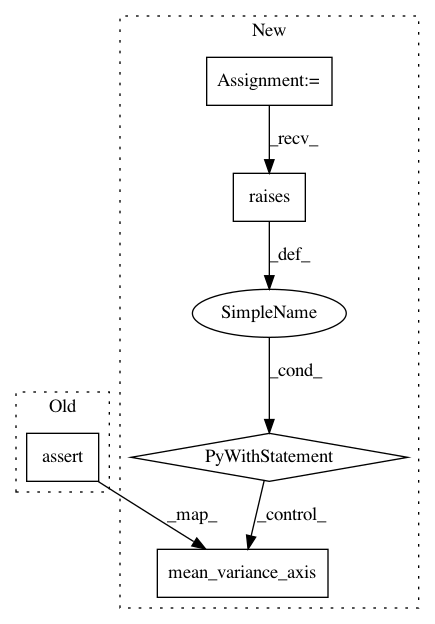

418e0d55d3577b5d98a0e77e5110638500a4aa26,sklearn/utils/tests/test_sparsefuncs.py,,test_mean_variance_illegal_axis,#,190
Before Change
X_csr = sp.csr_matrix(X)
assert_raises(ValueError, mean_variance_axis, X_csr, axis=-3)
assert_raises(ValueError, mean_variance_axis, X_csr, axis=2)
assert_raises(ValueError, mean_variance_axis, X_csr, axis=-1)
assert_raises(ValueError, incr_mean_variance_axis, X_csr, axis=-3,
last_mean=None, last_var=None, last_n=None)
assert_raises(ValueError, incr_mean_variance_axis, X_csr, axis=2,
After Change
mean_variance_axis(X_csr, axis=-3)
with pytest.raises(ValueError):
mean_variance_axis(X_csr, axis=2)
with pytest.raises(ValueError):
mean_variance_axis(X_csr, axis=-1)
with pytest.raises(ValueError):
incr_mean_variance_axis(X_csr, axis=-3, last_mean=None, last_var=None,
last_n=None)
In pattern: SUPERPATTERN
Frequency: 3
Non-data size: 5
Instances
Project Name: scikit-learn/scikit-learn
Commit Name: 418e0d55d3577b5d98a0e77e5110638500a4aa26
Time: 2020-02-02
Author: batisse.alexandre@gmail.com
File Name: sklearn/utils/tests/test_sparsefuncs.py
Class Name:
Method Name: test_mean_variance_illegal_axis
Project Name: scikit-learn/scikit-learn
Commit Name: 418e0d55d3577b5d98a0e77e5110638500a4aa26
Time: 2020-02-02
Author: batisse.alexandre@gmail.com
File Name: sklearn/utils/tests/test_sparsefuncs.py
Class Name:
Method Name: test_mean_variance_axis1
Project Name: scikit-learn/scikit-learn
Commit Name: 418e0d55d3577b5d98a0e77e5110638500a4aa26
Time: 2020-02-02
Author: batisse.alexandre@gmail.com
File Name: sklearn/utils/tests/test_sparsefuncs.py
Class Name:
Method Name: test_mean_variance_axis0